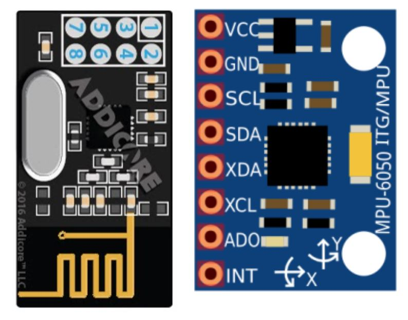
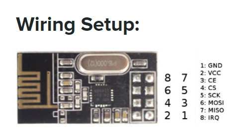
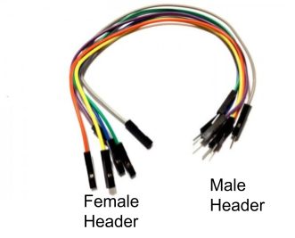
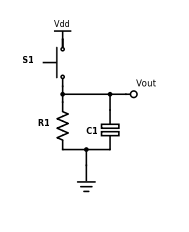
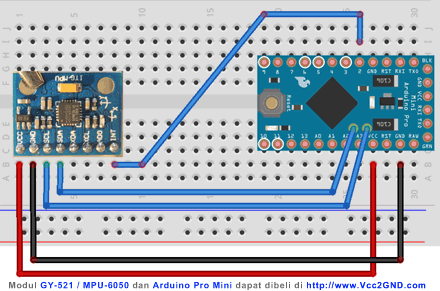
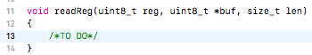
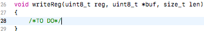
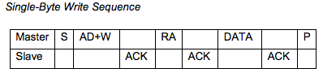
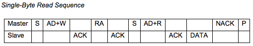
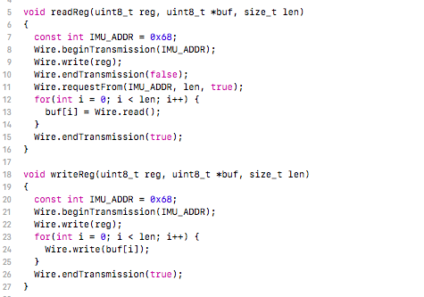

Radio Red Light Green Light & IMU Brightness Indicator

About this Project
In the first part of this lab, you will be implementing a game similar to Red Light Green Light, except that the Arduino Nanos will not be communicating over UART (Tx/Rx). You will be using two different microcontrollers connected over a wireless radio communications link, more specifically the Nordic NRF24l01P. The radios use SPI communication with the Arduino.
In the second part of this lab, you will be briefly working with an IMU, which is a combination of an accelerometer and gyroscope, which gives data on orientation. The IMU uses I2C communication with the Arduino. This is independent from the first part of the lab!
Lecture Slides
Prerequisites
Skills Learned
- Wireless radio communications
- Serial Peripheral Interface (SPI)
- Inertial measurement unit (IMU)
- Inter-Integrated Circuit (I2C)
Group Project - Outcomes and Expectations
By the end of this lab, you should be familiar with how data is transmitted across a wireless communication link (through radio). In order to be “checked off” for this lab, you must complete each checkpoint. Every team member is expected to have contributed to the lab, and may be quizzed on any of the information covered. We will check off on an individual basis (i.e. if only 2 of your 3 members are present, the one who is not will need to come in at another time to get checked off).
Parts List
| Part | Quantity | Estimated Cost | Example Vendor |
|---|---|---|---|
| Arduino Nano | 2 | $4.00 | Amazon |
| Mini USB Cable | 2 | $2.00 | Mouser |
| NRF24L01p Radio Module | 2 | $12.88 (pack of 10) | Amazon |
| IMU | 1 | $3.00 | Amazon |
| Breadboard | 2 | $1.50 | Amazon |
| Green LED | 1 | $0.12 | Digikey |
| Red LED | 1 | $0.14 | DigiKey |
| White LED | 1 | $0.17 | DigiKey |
| Push Button | 2 | $0.23 | DigiKey |
| 10kOhm Resistor | 2 | $0.10 | DigiKey |
| 100nF(0.1uf) Capacitor | 2 | $0.45 | DigiKey |
Total estimated cost: $22.57 per team of 2
If reusing Breadboard/Arduino/MiniUSB/Radio Module/IMU: $1.99 per team of 2
Reference Material
THIS LAB REQUIRES READING DOCUMENTATION AND DATASHEETS. Before you ask an officer a question, make sure your answer is not in the slides, this document, the datasheet, or the documentation for the library. Arduino Nano
{kind=link}
Radio Module
IMU
Libraries to download:
Project Specification Part 1 (Radio Red Light Green Light )
Checkpoint 1: Getting your MCUs talking to each other
Wiring
Wire up your MCUs so that we can get them talking over the radio (rather than Tx/Rx from last time). To read and write between hardware devices, we will be using a few helpful libraries to facilitate the process. Remember that data transmitted by one MCU is data received by the other. Since each MCU will be using its own radio, there should be no physical wires connecting the two.
The wiring setup is as follows. You can use any digital pins for CE(chip enable) and CSN(slave select) in theory, but the libraries written assume you will be using pins 7 and 8 as indicated below. MOSI and MISO should be connected to the respective pins on the Arduino by their pin name. (MOSI pin connects to the Arduino MOSI pin, and vice versa).

| Pin Name | Pin # on Radio Module | Arduino Pin | Function |
|---|---|---|---|
| GND | 1 | GND | Connected to the Ground of the system |
| VCC | 2 | 3.3V | Powers the module using 3.3V |
| CE (Chip Enable) | 3 | D7 | Used to enable SPI communication |
| CSN (Chip Select Not) | 4 | D8 | This pin has to be kept high always, else it will disable the SPI |
| SCK (Serial Clock) | 5 | D13 | Provides the clock pulse using which the SPI communication works |
| MOSI (Master Out Slave in) | 6 | D11 | Connected to MOSI pin of MCU, for the module to receive data from the MCU |
| MISO (Master In Slave Out) | 7 | D12 | Connected to MISO pin of MCU, for the module to send data from the MCU |
| IRQ (Interrupt) | 8 | Do not connect | It is an active low pin and is used only if interrupt is required |

Use female to male jumper wires to connect them.
Adding Libraries in the Arduino IDE
We have provided these libraries for you to use, to abstract away certain parts of using the radio module and the IMU. You may examine the libraries’ code if you want to see what they do.
To add these libraries to your Arduino libraries, download these zip files. Then, go to:
- Sketch > include library > Add a .zip library and select these zip files.
You will want to have three separate libraries: RF24_transmitter, RF24_receiver, and sensor_fusion. Alternatively, you can extract the RF24_transmitter, RF24_receiver, and sensor_fusion folders into your libraries IDE subfolder. To get to the subfolder just go into your IDE installation location (default is the Documents folder) > libraries (create it if it doesn’t exist) > put the folders in here.
Using the RF24 libraries
Receiver side
To receive something over radio, add this line to the very top of your sketch.
#include “receiver.h”
In your sketch, you must also add the following line to the beginning of setup():
Serial.begin(9600);
receiver_setup();
This function will set up the radio module and print out some of its details. Now you will be able to call the receiving function. Open receiver.h and look at the declaration of bool receiving(float& val). The function will return true or false depending on whether the radio receives a value. The value received will be stored in the variable val that you pass into the receiving() function. For example:
float storage;
if (receiving(storage)) {
Serial.print("Received value: ");
Serial.println(storage);
} else {
Serial.println("Did not receive value.");
}
Transmitter side
To send something over radio, add this line to the very top of your sketch.
#include “transmitter.h”
In your sketch, you must also add the following line to the beginning of setup():
Serial.begin(9600);
transmitter_setup();
Again, this function will set up the radio module and print out some of its details.
Now you will be able to call the sending function. Open transmitter.h and look at the declaration of void sending(float tex). The function will attempt to send the value provided by the variable val that you pass to the sending() function, and will print out to the console either “ok” or “failed”. You can find the libraries for both functions here.
NOTE: DO NOT INCLUDE receiver.h AND transmitter.h IN THE SAME SKETCH. This means that for this lab, an Arduino can act as either a receiver or a transmitter, but not both.
NOTE: The Arduino has issues printing floats, so when you try to print them out, it will print out some garbage. For example, if you try to print out 3.3, it will print out 13107 instead. So, if you’re trying to send a float, just check that the same garbage value is being printed on both the sender side and the receiver side, even though the value 3.3 is being stored correctly. If you send an int, you should be able to print out the int correctly on both sides. If you are curious, you can read more about it here.
Checkpoint 1: Write two sketches, one for each Arduino. One sketch(transmitter) should send a float to the other Arduino. The float you send will be your team number. The other sketch(receiving) should receive this float value and print that value out to the receiving side’s serial monitor. The on board LED should turn on when you receive the same value that was sent as well. Make sure to set the same baud rate for both sketches. Use 2 computers to observe the data going over more easily.
Checkpoint 2: Radio Red Light, Green Light
Wiring
The wiring is pretty much exactly the same as Serial Red Light Green Light, except that you will be using the radio modules rather than the TX/RX pins. The following is a recap of the last spec.
Stoplight Arduino
You will need to hook up 2 different output LEDs (choose between red, yellow and/or green)** to your Stoplight Arduino. Remember, LEDs can burn out if more than 20mA of current passes through them, and usually you want to limit current to <=5mA to save energy and to prevent the LED from being too bright. Make sure to include a current-limiting resistor in series with your LEDs. The digital pins output ~5V when you write HIGH.
Carduino
Your Carduino will have 2 push button inputs, one representing the gas pedal and one representing your brake. If the Green Light is flashed, you’ll press on the gas button. When the Red Light is flashed, you’ll press on the brake. Grab these buttons from the OPS parts drawers. Use this pinout to help you in selecting pins for your Arduino
Button Debouncing
When you press or release a button, it will “bounce” several times before reaching its final state, which means several button presses will be registered. One way to avoid this is to put a capacitor in series with the button, so that the button release will not register until after the capacitor is fully discharged over time. If the capacitor’s value has been appropriately chosen, this will be after the button has finished bouncing, such that only one press will be registered. Below is the basic circuit for button debouncing:

Vout is the voltage read by the microcontroller input pin, and Vdd is +5V. Use a 10k resistor and a 100nF capacitor for your debouncing circuit, so that you achieve an RC time constant of 1ms (time constant = resistance * capacitance).
NOTE: This debouncing circuit also includes a pull-down resistor, so that Vout is HIGH when the button is pressed, and LOW otherwise. Also, the RC constant can be a complicated topic, but for now it is sufficient to understand that it is the product of resistance and capacitance, and corresponds to the amount of time the circuit debounces.
Altering original code
The final objective of this lab is to write a complete implementation of the Radio Red Light Green Light game. However, you will need to use the radio modules instead of the Tx/Rx ports. Again, the expectations for this game are as follows:
Game Requirements (from previously)
- Two differently colored LEDs (Stoplight side; the game controller)
- One white LED (Carduino side; the player)
- The Stoplights (Game Controller) flashes one of the LEDs; the color chosen should be as random as possible (check the Appendix for help on this);
- On the Carduino (Player Module), the player should press the button that matches the LED the Controller flashed (i.e. Gas for Green Light, Brake for Red Light)
- The Stoplight (Game Controller) should wait until a button is pressed on the Carduino (Player Module). The player must press the correct button.
- If the player presses the correct button, the white LED must blink and a point must be added to the player’s score. A new round must begin.
- Should the player lose (by pressing the incorrect button), the white LED on the Car (Player Module) should turn on for 5 seconds, then start a new game (remember to reset score).
- The serial monitor should print the player’s score at the end of every round (intersection). When the play loses, the serial monitor should show this with the reset score after the game starts again.
Project Specification Part 2 (IMU Brightness Indicator)
Checkpoint 1: Implement readReg() and writeReg()
IMU Overview
- Inertial measurement unit (IMU) are devices comprising units that integrate an acceleration sensor (accelerometer) and a gyroscope and are used to detect the acceleration and angular velocity of objects.
- Our IMU has 3 axis: x,y,z that it is able to report values on.
Wiring
The Arduino Nano has two pins - A4 and A5 - that are for the SDA and SCL lines respectively. SDA and SCL on the IMU should be connected to A4 and A5 on the Arduino respectively, and VCC and GND on the IMU should be connected to 5V and GND on the Arduino respectively. The other four pins should be left disconnected. You do not need the interrupt pin. You will need to solder male headers onto your IMU before you can use it. (Use the straight headers for the IMU, not the angled headers.)

Implement readReg() and writeReg()
The sensor_fusion library is incomplete. You will be implementing two functions in sensor_fusion.cpp, readReg and writeReg. These two functions setup communication between the IMU and Arduino with I2C, so you will eventually need to take a look at the corresponding datasheet and Wire.h library in Arduino to understand how to read and write from a given register in the function’s signature. You may also need to take a look at sensor_fusion.h to understand the function declarations and the parameters. There is not much code to actually implement, but will still prove to be difficult unless you look at how I2C works!


readReg()
- Parameters
- uint8_t reg: a single byte denoting the register address we want to read from
- unint8_t *buf: a pointer to the beginning of an array of type uint8_t. This is just like an array! We will store what is read from reg into this buffer
- size_t len: length of buffer
writeReg()
- Parameters are the same except we want to write to the parameter reg using the values stored in the buffer buf
Getting Started
To implement them, look near the end of I2C Communications Protocol Section (9.3) in the MPU6050 datasheet linked in the beginning. There it should describe how to read and write to a register with the I2C protocol. We will be implementing single-byte read sequence and single-byte write sequence.
1. Starting transmission
Recall that to read or write a message from/to a slave, the master needs to specify the start condition and the slave address it wants to talk to. When you begin transmission, you will need the slave address of the MPU-6050. You will find two possible addresses in the datasheet in Section 9.2: I2C interface. You can use either addresses listed in the datasheet since you are only using one MPU with the Arduino Nano, but we recommend that you use the first one. The datasheet lists this address in binary; you will have to convert it into decimal or hexadecimal (make sure to format hex as 0x###…) before you can use it directly. Remember, this address simply helps the master device (Arduino) initiate contact between your slave device (IMU). There is a function in the Wire.h that will start the transmission and specify the slave address to be used.
2. Transmitting the register to read/write
We have transmitted the start condition and the slave address. Now we need to write/specify the register address we want to either read from or write to. Once again, this function can be found in Wire.h.
3. Sending/Receiving Data
Once you have set the start condition, sent the slave address, and the register to read/write, you can finally send/receive data. You will also notice that both readReg and writeReg contain a parameter uint8_t* buf; you can simply think of this pointer as an array of unsigned 8-bit integers. (Fun fact, arrays and pointers are pretty much the same thing!) The function readReg reads data from the register into this array, and the function writeReg writes data from the array into the register. You will need to use the following sample code when handling data in the I2C communication sequence.
Note: readReg also needs to send a restart message again after transmitting the register address. This can be done by setting Wire.endTransmission(false). Read up on what this does exactly since you will be asked a question based off this. ReadReg then also needs to specify what slave address it is requesting data from and how much.
Sample code is provided below to read into a buffer with length len:
for(int i = 0; i < len; i++) {
buf[i] = Wire.read();
}
Sample code is provided below to write from a buffer with length len:
for(int i = 0; i < len; i++) {
Wire.write(buf[i]);
}
4. Stopping transmission
At the end of a message transmission, the stop condition needs to be specified as well. There is a function in the Wire.h library that sends a stop message, so you will need to call this function at the end of both readReg and writeReg.
All the functions in the Wire.h library correspond to other parts of the communication sequences, and you will have to find them and figure out what they are. The ones that will not be used are Wire.SetClock, Wire.available, Wire.onRequest, and Wire.onReceive.


Checkpoint 1: Complete the TO DO functions listed in the sensor_fusion.cpp file You will be implementing the readReg and writeReg functions in the file.
Checkpoint 2: Changing brightness of 3 LEDs based on orientation
For the next part of the lab, you will be using the IMU. Add a new .zip library with the files IMU.h, IMU.cpp, sensor_fusion.h, and your new completed version of sensor_fusion.cpp. (If you’ve already added a sensor_fusion library, you will need to delete the old library before adding the updated one.) After adding this library, you will need to make a new sketch to be uploaded to the Arduino that you want to connect to the IMU. At the very top of your new sketch, you will need to add the following lines in order to use the IMU:
#include “IMU.h”
#include “sensor_fusion.h”
extern float IMU_X;
extern float IMU_Y;
extern float IMU_Z;
In your sketch, in your setup() function, you will need to add this line to the top:
imu_setup();
In your loop() function, you will need to add this line to the top:
imu_loop();
These lines will store the correct x, y, and z values into the variables IMU_X, IMU_Y, and IMU_Z. These x, y, and z values represent a normalized orientation vector of the IMU, perpendicular to the plane of the IMU. The function imu_loop() will change these values as you tilt the IMU to face different directions, and they will be between -1 and 1 (e.g. the z value should ideally be 1 when the IMU faces straight up, and -1 when it faces straight down, though these values may be slightly off due to bias). Recall that floats don’t print properly in Arduino. As an example, if you want to see how IMU’s orientation changes with respect to x, you might want to include a line like this in your loop():
Serial.println( (int) (IMU_X * 100) );
The IMU cannot detect rotation about its internal z-axis. If you lay the IMU flat on a table and rotate it without tilting it, it will not register any changes.
DO NOT name any of your variables x, y, or z in your sketch. BAD THINGS WILL HAPPEN.
Checkpoint 2: Implement a circuit with 3 LEDs (or an RGB LED) which will respond to values in the IMU. Both the IMU and the 3 LEDs should be connected to the same Arduino (so there is no need for radio). When the IMU is tilted in the x, y, or z direction, it will light up an LED respectively. The greater the value of x, y, or z, the brighter its corresponding LED should be. (You may find the map function helpful.)
NOTE: You do not need the buttons or the debouncing circuit for this checkpoint. Also, you are probably not going to get the IMU to be 100% perfect; there is some bias and as long as we can see you are generally able to detect changes in orientation, you will pass the checkpoint.
Appendix: Troubleshooting/Helpful Tips
- Double check your connections. If your connections are not on the correct pin corresponding on the Arduino or the radio/IMU, the communication protocol will not work.
- Ensure that the slave address of the MPU-6050 has the correct slave address, or the IMU will not respond with any data.
- If your radio modules don’t seem to be working properly, try adding a delay of 100 ms in your loop.
Summary
- Have completed every checkpoint of the lab and gotten checked off by an officer.
- Have a fully functioning implementation of the Red Light Green Light game to demo to an officer listed above to receive the final check off for this lab.
- Used the IMU in conjunction with the Radio module in sending data.
- Gained a solid understanding of the fundamentals of serial communications and how it is implemented by Arduino’s serial library.
- Any team member should be able to reasonably answer questions pertaining to lab procedures or content from corresponding lecture material.
Checkoff Questions
Here are some questions you can use to test understanding of the concepts involved in this project:
Lab 1: Radio Red Light Green Light
Checkpoint 1
For this checkpoint, the team must be able to send a float from one Arduino to the other through radio. The receiving end should print out the float, and turn on the onboard LED
- What communication protocol does the NRF24l01P use?
- SPI
- How does the radio module store information to allow the Arduino to access them?
- Registers
- How do we access said registers from the Arduino?
- Pointers and addresses provided by the manufacturers of said device in the datasheet
- What are the 4 minimum lines needed for SPI to work?
- MOSI: Master Out Slave In
- MISO: Master In Slave Out
- SS: Slave Select
- SCK: Serial Clock
- What is the max number of masters allowed in SPI?
- 1
- What pin corresponds to the master letting one of the slaves know that it wants to communicate with the slave?
- Pull the SS line LOW
Checkpoint 2
Here, the group must have a fully functional Red Light Green Light game implemented.
- How did your earlier implementation differ with the current implementation of Red Light Green Light?
- Any of the following are valid:
- Differs based on the communication type/principle
- Make one radio module the transmitter and one the receiver, thus forcing them to move buttons on one side and the rest of the LEDs on another
Lab 2: IMU Brightness Indicator
Checkpoint 1
There is only coding for this checkpoint. They have to implement a number of functions that you will ask them about:
- Explain how you wrote the code from the datasheet. (Have them point out page 35 and 36 while explaining the Wire.h commands)
- Why does the IMU offer 2 different slave addresses?
- This allows two IMUs to be connected to a single Arduino
Code for Checkpoint 1:

Checkpoint 2
Here, the group can either use an RGB LED or three LEDs to represent the three directions of the IMU. Different colors should light up depending on which direction they tilt the IMU.
- What communication protocol does the MPU-6050 use?
- I2C
- What are the 2 lines needed in I2C?
- SCL: Serial Clock
- SDA: Serial Data
- What 2 components(sensors) make up the IMU we gave you?
- Gyro and Accelerometer
- What values does the IMU report to? (Ask them where the vector is pointing)
- Change of x, y, z coordinates
- How does the master let the slaves know it wants to talk to a particular slave?
- It will broadcast the slave address it wants to talk to.
- What is the difference between SPI and I2C in terms of when the master wants to talk to a particular slave?
- SPI: Done through HW by pulling SS low
- I2C: Done through SW using slave addressing